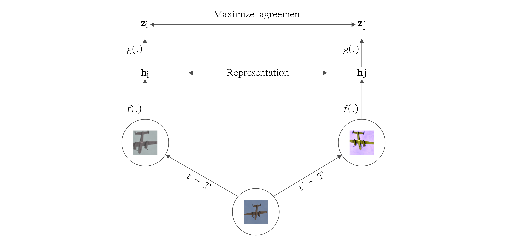

Apprentissage Auto-Supervisé (SSL) pour la Vision

1. Introduction
L'annotation de données est coûteuse et chronophage. Ce projet explore les techniques de Self-Supervised Learning (SSL), permettant d'apprendre des représentations visuelles robustes sans aucune étiquette (label), en utilisant uniquement la structure inhérente des données.
2. Objectif & Méthodologie
L'objectif est d'entraîner un encodeur (ResNet-18/50) capable de projeter des images dans un espace latent où les images sémantiquement proches sont géométriquement proches. J'ai implémenté une approche de type Contrastive Learning (SimCLR).
Le pipeline d'augmentation
Le cœur de la méthode repose sur la création de deux vues augmentées \(\tilde{x}_i\) et \(\tilde{x}_j\) d'une même image \(x\). Les augmentations incluent :
- Random Resized Crop
- Color Jitter (Distorsion de couleur)
- Gaussian Blur
Formalisation Mathématique : NT-Xent Loss
Nous cherchons à maximiser la similarité entre les paires positives (augmenations d'une même image) tout en minimisant la similarité avec les paires négatives (autres images du batch).
Soit \(z_i\) et \(z_j\) les projections des vues augmentées. La fonction de perte utilisée est la Normalized Temperature-scaled Cross Entropy Loss :
$$ \mathcal{L}_{i,j} = -\log \frac{\exp(\text{sim}(z_i, z_j)/\tau)}{\sum_{k=1}^{2N} \mathbb{1}_{[k \neq i]} \exp(\text{sim}(z_i, z_k)/\tau)} $$Où :
- \(\text{sim}(u, v) = u^T v / (\|u\| \|v\|)\) est la similarité cosinus.
- \(\tau\) est un paramètre de température scalaire.
- \(N\) est la taille du batch.
3. Implémentation
Le projet est entièrement codé en Python avec PyTorch. Voici un extrait de la classe gérant les augmentations :
import torch.nn as nn
import torchvision.transforms as T
class SimCLRTransform:
def __init__(self, size=224):
self.transform = T.Compose([
T.RandomResizedCrop(size=size),
T.RandomHorizontalFlip(),
T.RandomApply([
T.ColorJitter(0.8, 0.8, 0.8, 0.2)
], p=0.8),
T.RandomGrayscale(p=0.2),
T.ToTensor()
])
def __call__(self, x):
# Retourne deux vues de la même image
return self.transform(x), self.transform(x)
4. Résultats (Linear Evaluation Protocol)
Pour évaluer la qualité des représentations, nous avons figé l'encodeur et entraîné un classifieur linéaire simple sur CIFAR-10.